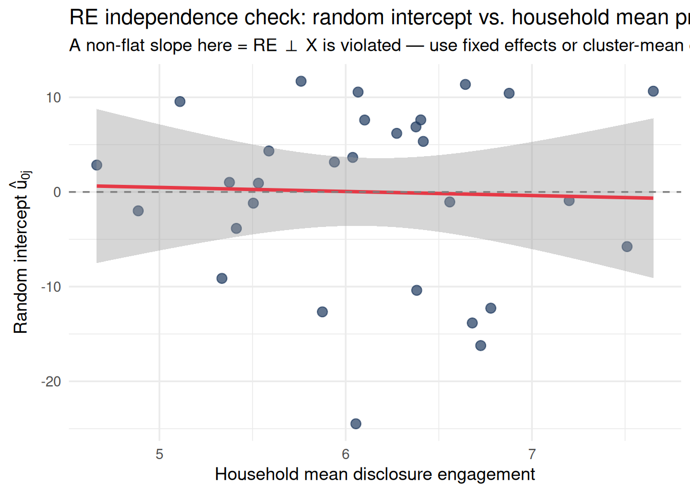

NoteWhat Do Random Intercepts Add Over Fixed Effects?
Question: Fixed effects remove between-unit variation by absorbing it into dummies. But what if you want to estimate how much units vary, make predictions for new units, or model the effect of unit-level predictors like household income or participant trait?
What goes wrong with fixed effects: Unit-level predictors are collinear with the unit dummies and cannot be estimated. New units have no intercept. The model learns nothing about the population distribution of unit effects.
The fix: Random intercepts treat unit-level deviations as draws from a normal distribution, enabling partial pooling, shrinkage toward the grand mean, and predictions for out-of-sample units — at the cost of requiring the random effects to be uncorrelated with the predictor.
Beyond Absorbing Unit Differences
Fixed effects remove between-unit variation by absorbing it into dummy variables. That works, but it destroys information:
You can no longer estimate the effect of unit-level predictors (household income tier, participant trait anxiety)
You cannot make predictions for new units not in your sample
You learn nothing about how much units differ from each other — the variance itself is scientifically informative
Random intercepts take a different view. Instead of asking “what is the specific intercept of unit \(j\)?”, the model asks “what is the distribution of intercepts across all units in the population?” It treats unit-level deviations as draws from a probability distribution rather than as fixed constants to be estimated.
This single shift — from “estimate each intercept” to “estimate the distribution of intercepts” — has wide-reaching consequences for inference, prediction, and interpretation.
The Model in Two Equivalent Forms
Two-Level Notation
Random intercept models are most naturally described in two levels.
Level 1 describes variation within units (within the same household across months; within the same participant across stimuli):
The model estimates three variance parameters: \(\sigma^2_u\) (between-unit variance), \(\sigma^2_\varepsilon\) (within-unit residual variance), and their ratio defines the ICC.
where \(\alpha_j\) was estimated as a separate free parameter for each unit.
The random-intercept model replaces the free \(\alpha_j\) with \(\gamma_{00} + u_{0j}\), imposing the constraint that unit deviations are drawn from a normal distribution. This constraint enables partial pooling (shrinkage) and allows between-unit inference — but it comes with the critical assumption (independence of random effects from predictors) that the FE model does not require.
Two Examples: Longitudinal and Experimental
Example 1: Household Savings and Financial Disclosure (Longitudinal)
30 households each complete a monthly financial diary for 7 months. We want to know: within a household, does reading more of the financial disclosure document predict higher savings that month?
Code
n_households <-30n_months <-7# Stable household-level baseline savings (between-household differences)hh_baseline <-rnorm(n_households, mean =25, sd =8)df_diary <-expand_grid(household =1:n_households,month =1:n_months) |>mutate(disclosure =rnorm(n(), mean =6, sd =2), # pages read (varies month-to-month)# True within-household effect: 2 pct-points of savings per page readsavings = hh_baseline[household] +2* (disclosure -6) +rnorm(n(), 0, 5),household =factor(household) )# Fit random intercept modelmodel_ri_diary <-lmer(savings ~ disclosure + (1| household), data = df_diary)summary(model_ri_diary)
Linear mixed model fit by REML. t-tests use Satterthwaite's method [
lmerModLmerTest]
Formula: savings ~ disclosure + (1 | household)
Data: df_diary
REML criterion at convergence: 1364.1
Scaled residuals:
Min 1Q Median 3Q Max
-2.25868 -0.58424 -0.02361 0.62763 2.96667
Random effects:
Groups Name Variance Std.Dev.
household (Intercept) 92.52 9.619
Residual 24.59 4.958
Number of obs: 210, groups: household, 30
Fixed effects:
Estimate Std. Error df t value Pr(>|t|)
(Intercept) 12.0087 2.1425 57.5971 5.605 6.15e-07 ***
disclosure 1.9519 0.1925 181.1309 10.141 < 2e-16 ***
---
Signif. codes: 0 '***' 0.001 '**' 0.01 '*' 0.05 '.' 0.1 ' ' 1
Correlation of Fixed Effects:
(Intr)
disclosure -0.550
Reading the output:
\(\hat\gamma_{00}\) (Intercept fixed effect): the grand mean savings rate across all households and months
\(\hat\beta_1\) (disclosure fixed effect): on average, one extra page read is associated with ~2 percentage points higher savings, within the same household
\(\hat\sigma_u\) (household random effect SD): how much households differ in their baseline savings rate
\(\hat\sigma_\varepsilon\) (residual SD): how much a household’s savings fluctuates month-to-month, after accounting for disclosure
broom.mixed::tidy(model_ri_diary, effects ="ran_pars") |> knitr::kable(digits =3,caption ="Variance components: how much do households differ vs. fluctuate?")
Variance components: how much do households differ vs. fluctuate?
effect
group
term
estimate
ran_pars
household
sd__(Intercept)
9.619
ran_pars
Residual
sd__Observation
4.958
Example 2: WTP and Price Framing (Experimental)
50 participants each evaluate 20 product offers on their willingness to pay (WTP, 0–100). Half the offers use an “anchor high” framing (starting from a higher reference price); half use a neutral framing. We want to know: does anchor framing increase WTP?
Variance components: participant differences vs. offer-level variation
effect
group
term
estimate
ran_pars
participant
sd__(Intercept)
10.011
ran_pars
Residual
sd__Observation
9.762
Notice the parallel: in the diary study, \(u_{0j}\) captures household differences in baseline savings behaviour. In the WTP study, \(u_{0j}\) captures participant differences in baseline WTP. The math is identical; the interpretation is substantively different.
Code
# Visualize random intercepts for both examplesre_diary <-ranef(model_ri_diary)$household[, 1]re_wtp <-ranef(model_ri_wtp)$participant[, 1]p1 <-tibble(unit =seq_along(re_diary), re =sort(re_diary)) |>ggplot(aes(x =reorder(unit, re), y = re)) +geom_point(color ="#1e3a5f", size =2) +geom_hline(yintercept =0, linetype ="dashed", color ="gray50") +labs(title ="Study 1: Household random intercepts",subtitle ="Each dot = one household's deviation from grand-mean savings",x ="Household (sorted)", y =expression(hat(u)[0*j])) +theme_minimal(base_size =11) +theme(axis.text.x =element_blank())p2 <-tibble(unit =seq_along(re_wtp), re =sort(re_wtp)) |>ggplot(aes(x =reorder(unit, re), y = re)) +geom_point(color ="#2d6a4f", size =2) +geom_hline(yintercept =0, linetype ="dashed", color ="gray50") +labs(title ="Study 2: Participant random intercepts",subtitle ="Each dot = one participant's deviation from grand-mean WTP",x ="Participant (sorted)", y =expression(hat(u)[0*j])) +theme_minimal(base_size =11) +theme(axis.text.x =element_blank())p1 + p2
The Assumptions of Random Intercept Models
WarningAssumption 1: Normality of Random Effects
Plain-language meaning: The household (or participant) deviations from the grand mean are assumed to form a bell-shaped distribution — not a two-humped distribution, not a skewed one, not a collection of discrete clusters.
What the model assumes away: That units might fall into distinct subgroups (high-savers vs. low-savers as distinct types) rather than lying along a smooth continuum.
JDM example (observational): If financial literacy creates two discrete groups of households — those enrolled in an advice program (high baseline savers) and those not (low baseline savers) — the distribution of \(u_{0j}\) will be bimodal, not normal. The model will estimate a single Gaussian that fits neither group well.
Experimental analog: If participant emotionality is bimodal (high-empathy vs. low-empathy types), or if you have two demographically distinct participant pools (students vs. workers), the normality assumption may be violated.
Skeptical reviewer objection: “Your random intercepts assume a single normal distribution of baseline savings. But you recruited from two income tiers — your random effects probably have two peaks. What does your distribution look like?”
Observable warning sign: A bimodal or heavily skewed Q-Q plot of BLUP estimates.
What claim survives even if violated: The fixed-effect estimate \(\hat\beta_1\) (the within-unit slope) is reasonably robust to mild non-normality of \(u_{0j}\), especially with large \(n\) (> 50 units). The random effect variance estimate \(\hat\sigma_u^2\) is more sensitive.
WarningAssumption 2: Independence of Random Effects from Predictors — The Critical Assumption
Plain-language meaning: Households with higher baseline savings (\(u_{0j} > 0\)) should not systematically read more (or less) of the disclosure document. The random intercepts must be uncorrelated with the predictor.
What the model assumes away: Any tendency for higher-baseline units to have systematically higher (or lower) predictor values. If wealthier households both save more by default and read disclosure more because they are more financially engaged, then \(u_{0j}\) and \(X_{ij}\) are positively correlated — and the random-effects estimator is biased upward.
JDM example (observational): In the financial diary study: if households with stable high savings (large \(u_{0j}\)) tend to be precisely the households that engage most with disclosure (high average \(\bar{X}_j\)), the random-effects model will attribute some of the between-household sorting to the within-household slope. The fixed-effects model would remove this bias; the random-effects model does not.
Experimental analog: When stimuli are randomly assigned, this assumption is satisfied by design for the treatment variable. In the WTP study, anchor framing is randomly assigned across offers, so participant baseline WTP cannot systematically predict which framing condition they see. Randomisation is what makes experiments safe for random effects.
Skeptical reviewer objection: “Your random-effects estimate of the disclosure slope is larger than a within-demeaned fixed-effects estimate. That gap is the signature of correlated random effects. Have you run a Hausman test?”
Observable warning sign: The RE estimate for the predictor is noticeably larger than the FE estimate. This gap — called the “Hausman discrepancy” — is the classic diagnostic.
Code
# Hausman-style comparison: RE estimate vs. FE estimatedf_diary_panel <- df_diary |>mutate(hh_id =as.integer(household), month_id = month)df_pdata <-pdata.frame(df_diary_panel, index =c("hh_id", "month_id"))fe_plm <-plm(savings ~ disclosure, data = df_pdata, model ="within")re_plm <-plm(savings ~ disclosure, data = df_pdata, model ="random")cat("Fixed effects estimate:", round(coef(fe_plm)["disclosure"], 3), "\n")
Hausman Test
data: savings ~ disclosure
chisq = 0.017224, df = 1, p-value = 0.8956
alternative hypothesis: one model is inconsistent
The independence diagram. The key diagnostic is whether household-level averages of the predictor (\(\bar{X}_j\)) are correlated with the random intercepts (\(\hat{u}_{0j}\)):
Code
# Is the random intercept correlated with the household's mean disclosure?hh_means <- df_diary |>group_by(household) |>summarise(mean_disclosure =mean(disclosure), .groups ="drop") |>mutate(re_estimate =ranef(model_ri_diary)$household[, 1])ggplot(hh_means, aes(x = mean_disclosure, y = re_estimate)) +geom_point(size =3, color ="#1e3a5f", alpha =0.7) +geom_smooth(method ="lm", color ="#e63946", se =TRUE, linewidth =1.2) +geom_hline(yintercept =0, linetype ="dashed", color ="gray50") +labs(title ="RE independence check: random intercept vs. household mean predictor",subtitle ="A non-flat slope here = RE ⊥ X is violated — use fixed effects or cluster-mean centering",x ="Household mean disclosure engagement",y =expression("Random intercept "*hat(u)[0*j]) ) +theme_minimal(base_size =13)

When this plot shows a strong positive slope, the random intercept and the predictor are correlated — the RE estimator is biased. In that case, use fixed effects (Part 1) or cluster-mean centering (Module 2).
What claim survives: If the Hausman test is non-significant (FE and RE estimates agree), the RE estimates are unbiased and more efficient than FE estimates. The claim “controlling for stable household characteristics, each additional page of disclosure is associated with X points higher savings” stands.
WarningAssumption 3: Normality and Homoskedasticity of Level-1 Residuals
Plain-language meaning: After accounting for household baselines and the disclosure slope, the leftover month-to-month variation in savings is drawn from a normal distribution with the same spread for every household.
What the model assumes away: That some households are inherently more volatile than others (heteroskedasticity), or that the residuals follow a skewed or heavy-tailed distribution.
JDM example: Households with high income volatility (self-employed, commission-based earners) will have much larger month-to-month savings swings than salaried households. Their residual variance is larger — producing a funnel shape in the residuals-vs-fitted plot.
Experimental analog: Some offers may produce more disagreement across participants (ambiguous pricing conditions → higher SD). This shows up as condition-specific heteroskedasticity.
What to check: A residuals vs. fitted values plot. A funnel shape means variance increases with the fitted value (heteroskedasticity). A curve means the relationship is nonlinear.
Code
df_diary <- df_diary |>mutate(fitted =fitted(model_ri_diary), resid =residuals(model_ri_diary))p_rv <-ggplot(df_diary, aes(x = fitted, y = resid)) +geom_point(alpha =0.3, color ="#1e3a5f") +geom_hline(yintercept =0, linetype ="dashed") +geom_smooth(method ="loess", color ="#e63946", se =FALSE) +labs(title ="Residuals vs. Fitted",subtitle ="Funnel = heteroskedasticity; curve = nonlinearity",x ="Fitted values", y ="Residuals") +theme_minimal(base_size =12)p_qq2 <-ggplot(df_diary, aes(sample = resid)) +stat_qq(color ="#1e3a5f", alpha =0.5) +stat_qq_line(color ="#e63946") +labs(title ="Q-Q: Level-1 residuals",x ="Theoretical", y ="Sample") +theme_minimal(base_size =12)p_rv + p_qq2
What claim survives: With large samples (≥ 100 observations), the fixed-effect estimates are reasonably robust to moderate heteroskedasticity. Use robust standard errors (cluster-robust at the household level) if heteroskedasticity is detected.
WarningAssumption 4: Independence of Level-1 Residuals Within Units
Plain-language meaning: After conditioning on the household random intercept and the disclosure slope, the leftover month-to-month fluctuations are assumed to be independent of each other. Last month’s unexpectedly high savings does not predict this month’s savings beyond what the model accounts for.
What the model assumes away: Temporal autocorrelation in the residuals. The random intercept absorbs the stable between-month baseline difference, but it cannot capture temporal autocorrelation in the within-household fluctuations — the part that comes from spending habits, mood, or financial events carrying over from one month to the next.
JDM example: A household that had an unexpectedly low-savings month (car repair) may continue saving less the next month (still recovering). The random intercept captures their stable low-savings baseline, but not the temporary carryover from the shock. This produces positive lag-1 autocorrelation in residuals.
Experimental analog: This assumption is more defensible in experiments because stimuli are presented in random order and participants are asked to evaluate each one independently. However, contrast effects (rating relative to the previous offer) can induce trial-to-trial correlation.
What to check: Compute lag-1 autocorrelation of residuals within each unit:
Code
acf_df <- df_diary |>group_by(household) |>arrange(month) |>summarise(lag1 =cor(head(resid, -1), tail(resid, -1)),.groups ="drop")ggplot(acf_df, aes(x = lag1)) +geom_histogram(fill ="#1e3a5f", color ="white", bins =15) +geom_vline(xintercept =0, linetype ="dashed", color ="#e63946") +labs(title ="Lag-1 autocorrelation of residuals, by household",subtitle ="Distribution centered near 0 = independence assumption roughly met",x ="Lag-1 autocorrelation",y ="Number of households" ) +theme_minimal(base_size =13)
If the distribution is substantially right-shifted (most values positive), residuals are serially correlated and you need to model the autocorrelation explicitly — see Module 4 (Autoregressive Structures).
What claim survives: Serial correlation inflates the precision of the fixed-effect estimate (standard errors are too small). The point estimate itself is still unbiased. Adding an AR(1) residual structure or cluster-robust standard errors corrects the inference.
Partial Pooling: What Random Intercepts Do Uniquely
Neither pooled OLS nor fixed effects can do what random intercepts do: borrow strength across units to produce better estimates for units with little data.
Pooled OLS: forces all units to have the same intercept (complete pooling)
Fixed effects: estimates each unit’s intercept independently (no pooling)
Random intercepts: shrinks each unit’s estimate toward the grand mean, weighted by how much information that unit contributes (partial pooling)
The combined equation makes this explicit. The random-intercept estimate for unit \(j\) is a weighted average:
where \(\lambda_j = \frac{\sigma^2_u}{\sigma^2_u + \sigma^2_\varepsilon / n_j}\) is the reliability of unit \(j\)’s estimate. Units with many observations (\(n_j\) large) or high ICC (\(\sigma^2_u\) large relative to \(\sigma^2_\varepsilon\)) get reliability close to 1 — their own data dominates. Units with few observations get reliability close to 0 — the grand mean dominates.
Code
unit_means <- df_diary |>group_by(household) |>summarise(unpooled =mean(savings), n_obs =n(), .groups ="drop")re_ests <-tibble(household =rownames(ranef(model_ri_diary)$household),random_intercept =ranef(model_ri_diary)$household[, 1]) |>mutate(grand_mean =fixef(model_ri_diary)["(Intercept)"],pooled_re = grand_mean + random_intercept )comparison <-left_join( unit_means |>mutate(household =as.character(household)), re_ests, by ="household")ggplot(comparison, aes(x = unpooled, y = pooled_re)) +geom_point(size =3, color ="#1e3a5f", alpha =0.7) +geom_abline(slope =1, intercept =0, linetype ="dashed", color ="gray50") +geom_hline(yintercept =mean(comparison$pooled_re),color ="#e63946", linetype ="dotted", linewidth =1) +annotate("text", x =min(comparison$unpooled) +0.5,y =mean(comparison$pooled_re) +1.5,label ="Grand mean", color ="#e63946", size =3.5) +labs(title ="Partial pooling: unpooled means vs. random-intercept estimates",subtitle ="Estimates are pulled toward the grand mean (red) — that is shrinkage",x ="Unpooled household mean savings (no pooling)",y ="Random-intercept estimate (partial pooling)" ) +theme_minimal(base_size =13)
Points fall below the diagonal for high units and above it for low units — every estimate is pulled toward the grand mean. This is not a flaw; it is the model being appropriately uncertain about extreme values based on limited within-unit data.
TipReviewer Challenge: Three Questions About Your Random Intercepts
Challenge 1 — “Why random effects rather than fixed effects?” The key difference is Assumption 2 (RE ⊥ X). If households that are better savers also engage more with disclosure — a plausible self-selection story — the random-effects estimate is upwardly biased. A Hausman test can diagnose this, but a reviewer may simply ask: “Is there any reason to expect that household-level savings habits correlate with their disclosure engagement? If so, why use random effects?” Have your Hausman test results and a substantive argument for why the assumption is plausible.
Challenge 2 — “What does the random intercept variance tell you?” The ICC — the fraction of total variance attributable to between-household differences — is itself a scientific finding. If \(\hat\sigma_u^2 / (\hat\sigma_u^2 + \hat\sigma_\varepsilon^2) = 0.40\), then 40% of the variance in monthly savings is explained by stable household characteristics, before any predictor enters. Reviewers will ask what this means substantively and whether it is consistent with prior literature. Report and interpret \(\hat\sigma_u\) alongside \(\hat\beta_1\).
Challenge 3 — “Did you check the normality of your random effects?” With 30 households, the Q-Q plot for random intercepts only has 30 points — departures from normality are hard to detect with confidence. A reviewer will note that your inference for \(\hat\sigma_u^2\) depends heavily on the normality assumption, which is untestable with small \(n\). A sensitivity analysis using a non-parametric bootstrap or Bayesian estimation with heavy-tailed priors on random effects can address this concern.
Recommended Reading
Topic
Citation
Random effects for psychologists
Baayen, R. H., Davidson, D. J., & Bates, D. M. (2008). Mixed-effects modeling with crossed random effects for subjects and items. Journal of Memory and Language, 59(4), 390–412.
Partial pooling and shrinkage
Gelman, A., & Hill, J. (2007). Data Analysis Using Regression and Multilevel/Hierarchical Models. Cambridge University Press. (Chapter 12)
RE vs FE in experimental designs
Judd, C. M., Westfall, J., & Kenny, D. A. (2012). Treating stimuli as a random factor in social psychology. Journal of Personality and Social Psychology, 103(1), 54–69.
Hausman test
Hausman, J. A. (1978). Specification tests in econometrics. Econometrica, 46(6), 1251–1271.